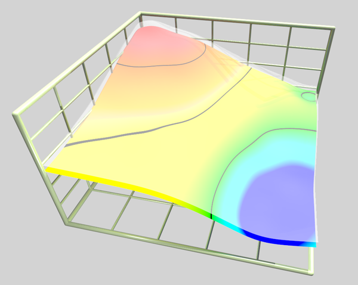
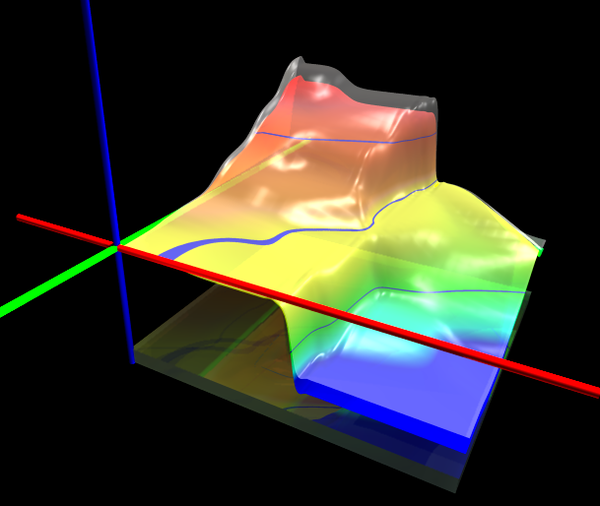

TABLE OF CONTENTS
ScPovPlot3D/IntervalPoints.inc [ Modules ]
PURPOSE
This is |html <b>preliminary edition</b>, I'll try to implement some interval formalism (implementation of "fuzzy points") to kriging algorithm in the future. Welcome comments!


Fig.[IntervalPoints] double 3D surface modelled by multiple Bezier patches objects
*********************************************************
** Tested on PovRay 3.7 **
** License: GNU GPL **
** Homepage: http://scpovplot3d.sourceforge.net **
*********************************************************
** version: 3.0.6 (& have a nice time ;) **
*********************************************************
AUTHOR
Janusz Opi쓰 Ph.D.
jmo@agh.edu.pl, janusz.opila@gmail.com Dept. of Applied Informatics AGH University of Science & Technology, Cracow, Poland Maintained by Janusz Opi쓰 Ph.D.
COPYRIGHT
GNU GPL v.3 License (c) 2012-now by Janusz Opi쓰 Ph.D. AGH University of Science and Technology